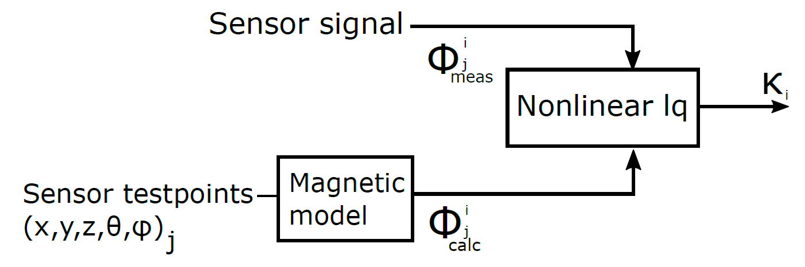
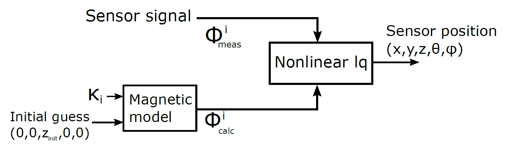

Position and Orientation Algorithm¶
The P&O algorithm forms the computational core of the Anser EM tracking systm. The algorithm utilises the demodulated waveform data to resolve the position and angular orientation of the tracking sensor coil. It does this by minimising the error between the waveform data and the magnetic field model of the system using non-linear least-quares solving methods.
Calibration¶
This section describes the calibration algorithm used in the Anser EMT system. The approach utilises a nonlinear least squares technique to minimise the error between the magnetic field measurements (from the sensor) and the numerical magnetic field model. Calibration is a necessary procedure since certain system parameters cannot be known to required precisions solely through the system design. Parameters such as amplifier gain and filter performance cannot be directly encapsulated within the magnetic filament model described in section 3a. The result is that each emitter coil produces a time-varying magnetic field, the magnitude of which cannot be determined precisely through analytical means.
Calibration allows for experimental refinement of the magnetic field model for each emitter coil. This is performed by acquiring a set of testpoints at known locations relative to each coil. The procedure yields a scaling factor for each emitter coil model which accurately encapsulates the otherwise difficult to determine circuit parameters such as amplifier gain and filter attenuation.
The resulting scaling factors fit the current filament model of the coils to the induced voltage signals received by the sensor coil.
Consider the magnetic flux measurements at \(m\) testpoints from the \(i_{th}\) coil in the FG to be represented by \(\Phi^i_{meas}\), and the associated modelled flux at this point too be given by \(\Phi^i_{calc}\). The objective function to be minimised the error between the two fluxs can by written as:
where \(\kappa_i\) is the calibration scaling factor for a particular coil, \(j\) is the current test point, \((x_j,y_j,z_j,\theta_j,\varphi_j)\) is the location and orientation of the sensor at testpoint \(j\) and \(m\) is the total number of testpoints. The scaling factors \(\kappa_i\) scale the magnetic field models of each transmitter coil. These scaling factors are required because the amplitude of each generated magnetic field varies due to the circuitry powering each coil.
{kind=link}
The calibration procedure of the Anser system requires 49 testpoints in a 7x7 grid on a Duplo baseplate.
Minimisation¶
The minimisation process aims to minimise each \(F_i\). Once complete, the resulting value of \(\kappa_i\) is the calibration factor for the \(i^{th}\) coil. A vector of 8 calibration values is produced for the Anser EMT system. Details of the minimisation process can be read in the comments of the Anser Matlab code. The calibration procedure and instructions regarding testpoint acquisition can be found in the system manual.
P&O Solver¶
The P&0 solver takes the demodulated sensor data and attempts to fit the signal strengths to the calibrated magnetic field model. The vector of values \((x,y,z,\theta,\varphi)\) which minimise the error between the measurements and model are the position and orientation of the sensor.
The P&O solver can be thought of as a dual to the calibration procedure. During the calibration the magnetic field model it fit using a set of known \((x,y,z,\theta,\varphi)\) positions to produce a set of scaling factors. The P&O solver utilises these scaling factors solve for a set of unknown test points in the field of operation.
The block diagram below shows a high level view of the solving process. Starting from an initial guess position and orientation \((0,0,z_{init},0,0)\) the nonlinear least squares algorithm compares the modelled flux \(\Phi\) from coil \(i\) (of \(m\) total coils) with that of the real sensor. The algorithm iteratively modifies the initial guess until the difference between the \(\Phi_{calc}\) and \(\Phi_{meas}\) is minimised. The \((x,y,z,\theta,\varphi)\) that simulataneously minimises the \(\Phi\) error for all \(m\) emitter coils is the calculated resolved sensor position.
{kind=link}
Cost function¶
In order for minimisation to take place on must provide an objective function to the solving algorithm. The objective function to be minimised looks similar to the calibration objective function: a sum of squared magnetic flux errors due to each. For a particular sensor acquisition at an unknown point in space \(j\) the objective function to minimise is given by:
where \(i\) is the index of the emitter coil under consideration, \(\Phi_{meas}^i\) is the flux contribution from emitter coil \(i\) and \(\Phi_{calc}^i\) is the calculated flux contribution from coil \(i\) at position \((x,y,z,\theta,\varphi)\). In this objective function, the vector \((x,y,z,\theta,\varphi)\) is the variable. The nonlinear solver in Matlab iteratively tweaks this vector in order to minimise the sum of the magnetic field errors due to each coil. The resulting sum of these errors is the cost function \(F\). The vector of \((x,y,z,\theta,\varphi)\) which results in the minimisation of \(F\) is the position and orientation of the sensor at the point \(j\) \((x_j,y_j,z_j,\theta_j,\varphi_j)\).
Details of the implementation, initial conditions and solver parameters can be read in the Matlab code for the P&O algorithm.